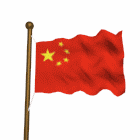

早上/中午/下午/晚上好

这里是美国海军与华盛顿通信中心BASS站点
We are THE CHINESE EMERGENCY HACKERS' GROUP CENTER
This Site:
Total:
这个站点已经被来自中国的正义的黑客所黑，
我们是中国黑客处理驻南斯拉夫联盟大使馆遭北约袭击事件专门小组
导弹，我们也有！！！
中国黑客说明误黑美国站点始末：
We chinese hackers announce for the hacking accident :
在破天荒地坦承过失的同时，中国黑客说，过时的网络系统、黑客与政府内部缺乏适当的沟通以及基於情报所做的研判严重失误，导致黑客黑手意外摸向美国站点。
At the same time we acknowledge the clanger of hacking you sites, we, chinese hackers,
said:the demoded network system,
a lack of communication with the government, and the severe lapsus in the inaccurate
information causes we hacked you american sites by accidentally.
中国黑客公开为误黑致歉但强调黑客立场不变：中国黑客处理驻南斯拉夫联盟大使馆遭北约袭击事件专门小组昨天为他们误黑美国站点一事公开道歉，并说他们对此事感到「遗憾」，但他们也说，在以美国为首的北约达到他们的条件之前，黑美国及北约站点的行动将会持续。
We Chinese hacker publicly apologize about the fire into the wrong block to your sites, we
are so regret about that , but we emphasize:
We ,the special group of chinese hackers who deal with the affair that your brutally bomb
to our Chinese Embassy in Belgrade,
won't stop hacking untill the NATO leaded by U.S.A accept the conditions that we require:
1. Take an essential action to make a thorough investigation
about the brutal attack!
2.Give 1.2 billions chinese people an essential explanation about the disclosure of the investigation AT ONCE!
3.To punish those responsible fellows for the brutal attack SEVERELY!
4.Stop the bombing IMMEDIATELY!
抗议北约野蛮轰炸中国使馆 strong protest NATO made intensionally attack
抗议西方媒体别有用心误导群众 protest west rumor the protest as anti-his-fuch-human-right
抗议美国霸权主义 Down with hegemonism!
GMT+8: 1999.05.16 08:20:00
{kind=link}